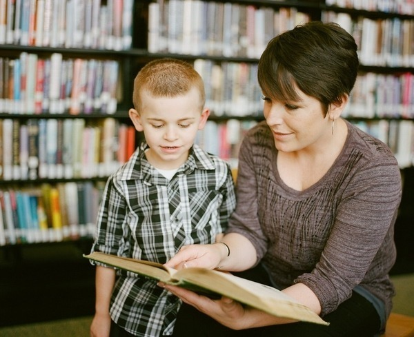
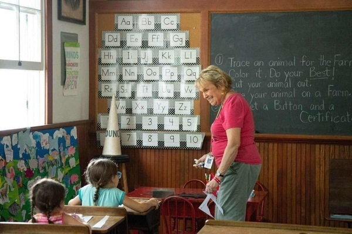

Strategies to Boost Literacy Skills
Here is where we explore practical and effective strategies to enhance literacy skills in grade school children. Literacy plays a fundamental role in academic success and lifelong learning, and by implementing these strategies, educators and parents can provide valuable support to young learners.
Phonics Instruction
Phonics is a crucial component of early reading instruction. By teaching children the relationship between letters and sounds, we can help them decode and read words with accuracy and fluency. Implementing systematic and explicit phonics instruction, using multisensory techniques and engaging activities, helps children develop strong foundational reading skills.
Vocabulary Building
Expanding children's vocabulary is essential for comprehension and effective communication. Encourage word exploration by introducing new words through context-rich activities, such as reading books and engaging in meaningful conversations. Provide opportunities for students to use newly learned words in their writing and speaking, fostering a deeper understanding and appreciation of language.
Comprehension Strategies
Teaching comprehension strategies equips children with the tools to understand and analyze texts effectively. Strategies like predicting, visualizing, questioning, and summarizing help students engage with the material and make connections to their prior knowledge. Guided practice, discussions, and modeling these strategies enhance students' comprehension abilities across different genres.
 Writing Prompts
Writing is a valuable tool for self-expression and critical thinking. Promote writing skills by providing engaging and open-ended prompts that encourage creativity and encourage students to express their thoughts and ideas. Encourage students to revise and edit their work, fostering a growth mindset and improving their overall writing proficiency.
Reading Engagement
Creating a positive reading environment is essential for fostering a love for literature and developing strong reading habits. Set aside dedicated time for independent reading and provide a variety of books at different reading levels to cater to individual interests and abilities. Incorporate read-aloud sessions, book clubs, and discussions to promote a shared love of reading and deepen comprehension skills.
Differentiated Instruction
Every child has unique learning needs and abilities. Differentiated instruction allows educators to tailor instruction and support to meet individual students' needs. By assessing students' reading levels, interests, and learning styles, educators can provide targeted instruction, offer appropriate challenges, and scaffold support to ensure that every child experiences success in their literacy journey.
By implementing these strategies, educators and parents can create a nurturing and engaging literacy environment that supports grade school children in their reading development. Through consistent practice, encouragement, and thoughtful instruction, we can empower children to become confident readers, critical thinkers, and lifelong learners.
Remember, these strategies can be adapted to suit individual classrooms, homeschooling environments, and the unique needs of each child. Together, let us foster a love for literacy and provide the necessary tools for grade school children to become proficient readers and successful learners.